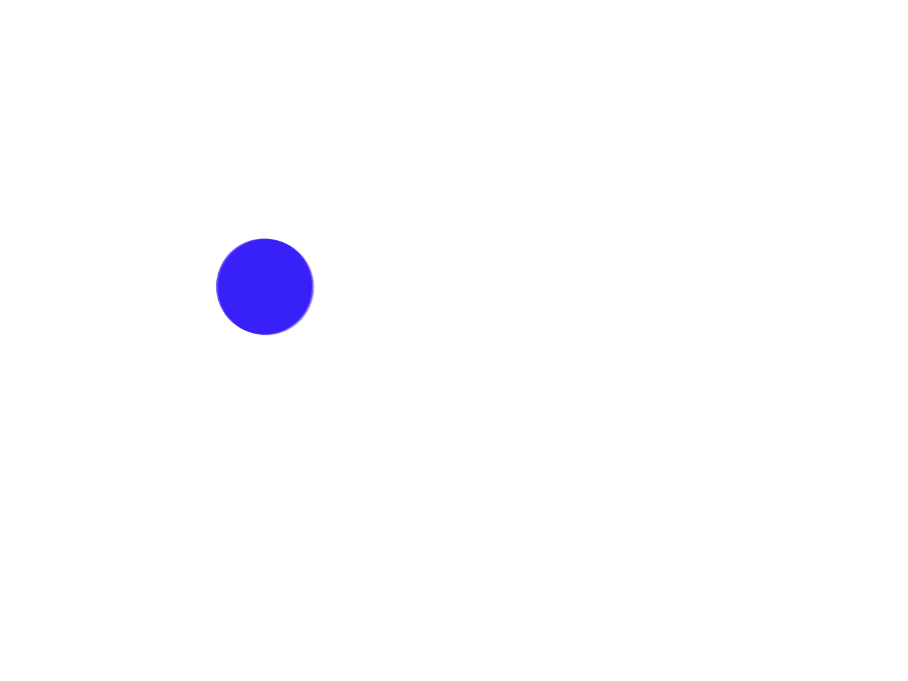
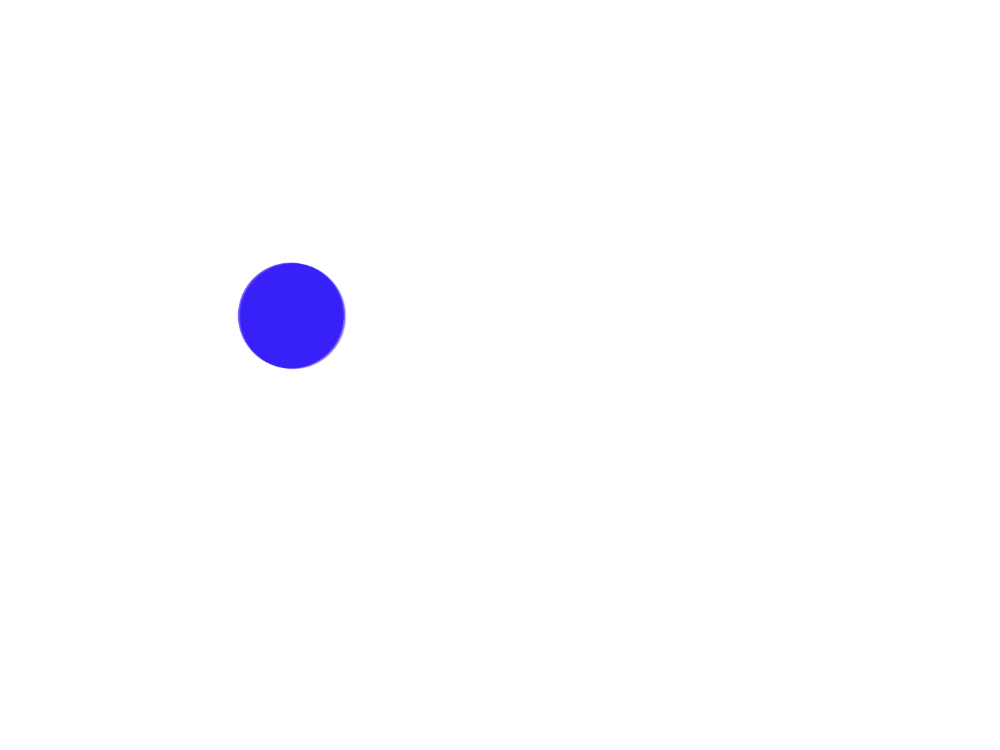

Mitimes / Automated Timekeeping for Legal Professionals
Branding, UI Design, Animation
 

Re-branding, user interface design, promotional video and website for Mitimes, a software application for legal professionals. Working as part of a team in the production of ver. 3 of the app, the brief of the project was to draw insights from the previous versions and create a unified vision for a new corporate application that would instill confidence in users and expand audience.

The conceptual approach to the branding was to move away from the “error red” colours and alarm clock iconography that had made up previous versions of the app, and instead focus on a positive approach to time. The aim of the redesign was not only to make the app easier to use, but to relieve the user of the pressure of timekeeping, allowing them to focus on the job at hand. As such the company logo was changed from a ticking timer to a graphical representation of a smooth flowing pendulum.
My role in the project involved the conceptualisation and design of all the key brand elements, design and prototyping of the user interface, and front end development. As a team we would have discussion on issues facing the users and how new features could solve these problems, which I would then design and prototype into to screens for user testing. Once final designs were realised, my team would collaborate with the Mitimes development team to implement the features and layout into the app.